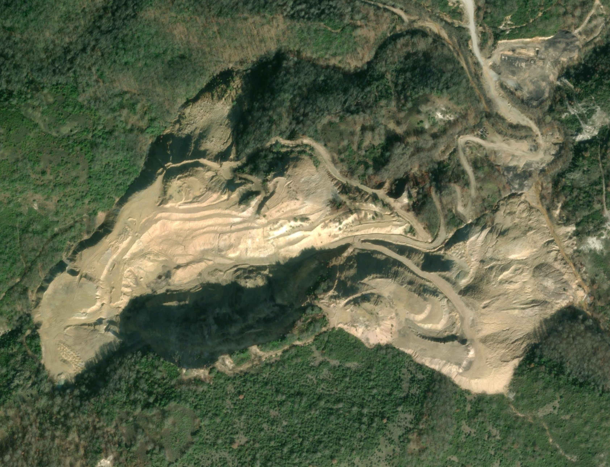
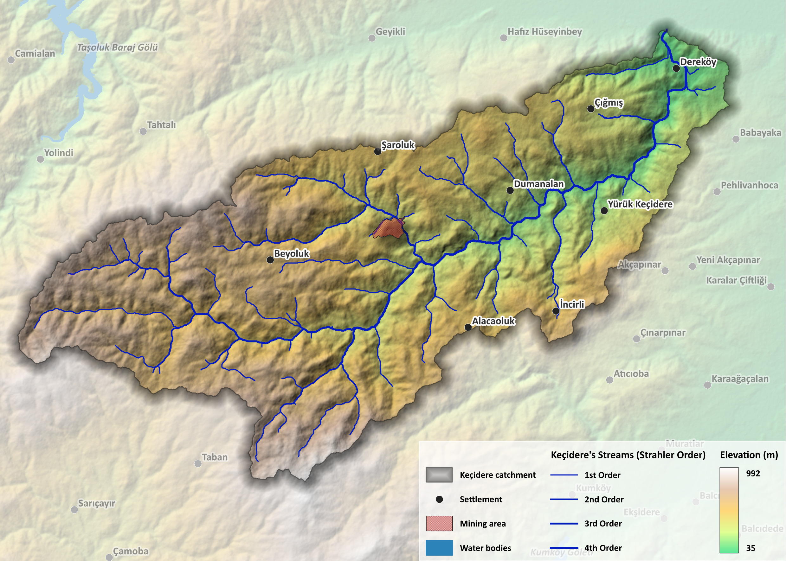
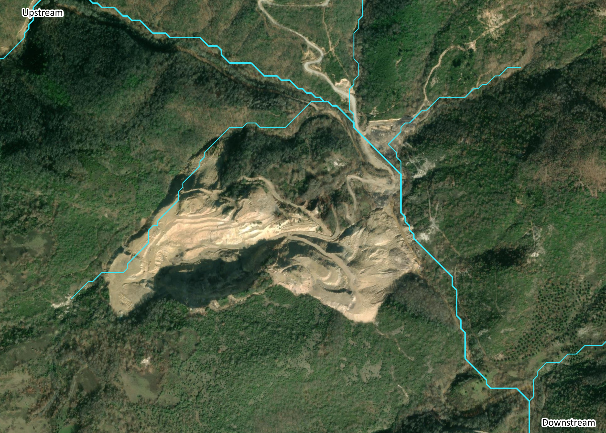
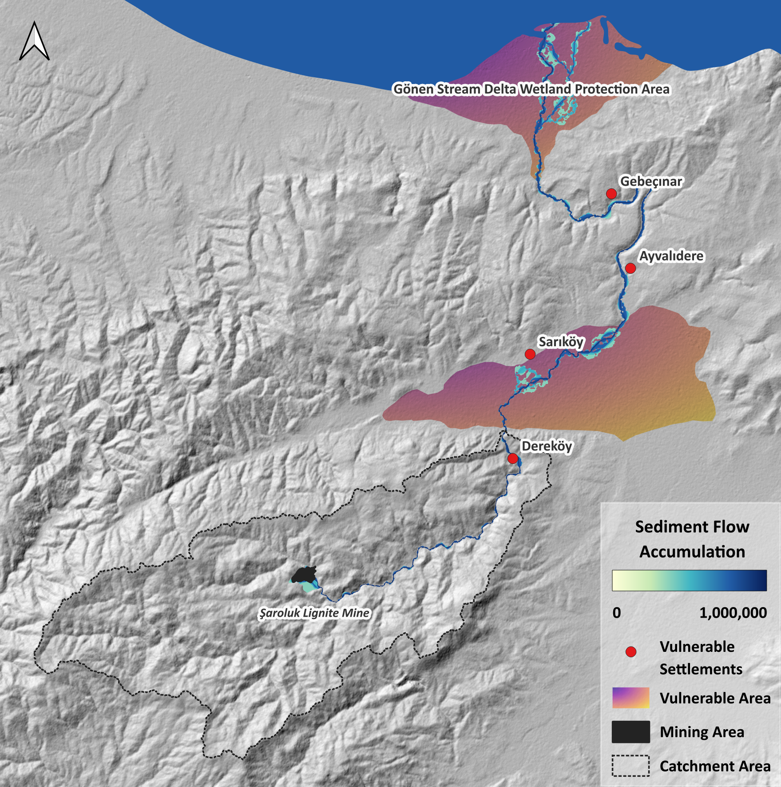
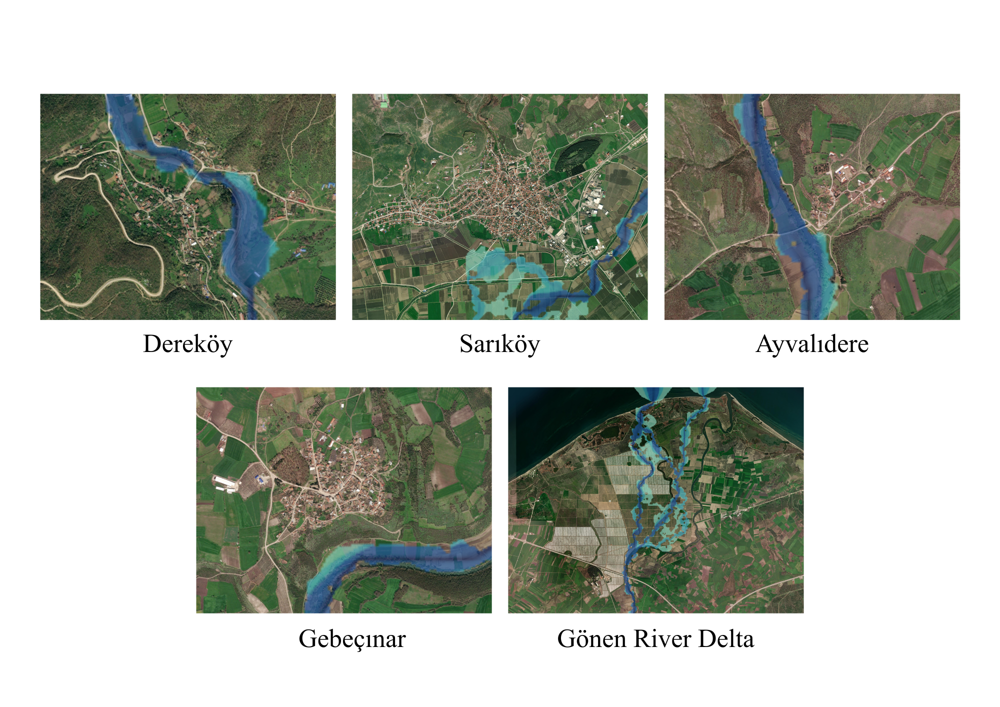

Sediment Routing from the Şaroluk Lignite Mine
A Terrain-Based Pollution-Risk Assessment of the Keçidere Catchment

Abstract
The Şaroluk Linyit Ocağı (Şaroluk Lignite Mine) sits at the head of the Keçidere catchment, a tributary system that drains northward into the Gönen River and, ultimately, into the Gönen Çayı Deltası Sulak Alanı Koruma Alanı (a protected river-delta wetland on the Marmara coast). This project applies terrain-based hydrological modelling to assess the pollution risk that exposed mine-spoil sediment poses to communities and ecosystems along this flow path. A digital elevation model derived from ALOS PALSAR was processed in SAGA GIS to delineate the catchment, extract the stream network, and compute per-cell slope, aspect, curvature, and the Desmet and Govers (1996) LS factor as an index of erosion and sediment-mobilisation potential. A multiple-flow-direction accumulation surface was then routed from the mine outward to trace the sediment corridor and identify exposed settlements. The results indicate a continuous sediment-transport pathway of approximately 45 km from the mine to the protected wetland, passing directly through four settlements; Dereköy, Sarıköy, Ayvalıdere, and Gebeçınar, of which Dereköy is the most exposed, lying only 15 m from the river channel on the valley floor.
1. Introduction and Motivation

The Keçidere is a fourth-order tributary catchment of the Gönen River in the Marmara region of Türkiye, draining a forested and agricultural upland stretching from Dereköy in the northeast to Beyoluk and Alacaoluk in the southwest. Within this catchment, the Şaroluk Linyit Ocağı, an open-cast lignite operation run by Mansuroğlu Madencilik, has removed vegetation cover and exposed loose overburden across a substantial footprint straddling the upper reaches of the drainage network. Bare, disturbed surfaces of this kind are disproportionate sediment sources relative to their area: rainfall striking exposed spoil detaches and mobilises fine material far more readily than it does on vegetated or consolidated ground, and the steep internal slopes of active pit faces and haul roads accelerate that mobilisation further.
Once mobilised, sediment does not stay local. It is routed downstream through the drainage network, following the same flow paths that carry floodwater, and it can carry adsorbed contaminants such as trace metals, hydrocarbons, and fine particulates associated with mining activity. Downstream of the mine, the Keçidere joins the Gönen River, which flows north past the settlements of Dereköy, Sarıköy, Ayvalıdere, and Gebeçınar before discharging into the Gönen Çayı Deltası Sulak Alanı Koruma Alanı, a legally protected wetland at the river mouth. Any of these downstream receptors, village water supplies, floodplain agriculture, or the wetland ecosystem itself could be affected if sediment and associated pollutants are efficiently routed from the mine site.
This project therefore asks a specific, terrain-driven question: given the topography of the Keçidere catchment, how efficiently is sediment routed from the mine to downstream receptors, and which settlements sit most directly in that pathway? The analysis isolates the structural (terrain-controlled) component of this risk, independent of mine-specific operational or water-treatment practices.
2. Methodology
A reproducible terrain-analysis workflow was applied in SAGA GIS to an ALOS PALSAR-derived DEM, proceeding from hydrological pre-processing to the routing of a sediment-transport-potential surface from the mine to the catchment outlet.

Datasets used:
| Dataset | Role | |
|---|---|---|
| ALOS PALSAR DEM | Terrain surface for hydrological and geomorphometric processing | |
| OpenStreetMap | Settlement locations, road network, and cartographic reference | |
| CHIRPS 2.0 | Annual rainfall estimate for the Keçidere catchment (2023) |
Workflow:
| Step | Stage | Description |
|---|---|---|
| 01 | Sink Filling | Depressions in the raw DEM are filled (Wang & Liu algorithm) to produce a hydrologically continuous surface, from which flow direction is derived. |
| 02 | Stream Ordering | Strahler stream order is computed from the flow-direction grid, classifying the drainage hierarchy of the Keçidere network. |
| 03 | Channel & Basin Extraction | Channels are extracted using a flow-accumulation threshold of 6 contributing cells, and drainage basins are delineated accordingly. |
| 04 | Catchment Delineation | Upslope contributing area is traced from a snapped pour point (549878.28 E, 4447652.09 N) to delineate the full Keçidere catchment boundary. |
| 05 | Terrain Attribute Grids | Slope, aspect, and curvature are computed per cell (Zevenbergen & Thorne, 1987). |
| 06 | LS Factor | The one-step LS factor is computed per cell (Desmet & Govers, 1996) and sampled by its average value over the mining footprint. |
| 07 | Flow Accumulation | A top-down, multiple-flow-direction accumulation surface routes sediment-transport potential from the mine outward across the catchment. |
| 08 | Exposure Mapping | The resulting sediment flow-accumulation surface is overlaid with settlement points to identify communities within the sediment-transport corridor. |
3. Theoretical Framework
Five terrain-analysis procedures underpin the workflow above. Each is defined below with its governing formulation and source.
3.1 Depression Filling and Flow Direction
where $z_{i,j}$ is the original cell elevation, $z'_{i,j}$ is the filled elevation, and $N(i,j)$ is the eight-cell neighbourhood. Filling is applied iteratively until every cell has a downslope, unbroken path to the catchment outlet. Flow direction is then assigned by the steepest-descent (D8) rule:
where $z_k$ is the elevation of neighbour $k$ and $d_k$ is the horizontal distance to that neighbour (cell size for cardinal neighbours, cell size $\times \sqrt{2}$ for diagonals).
References: Wang & Liu (2006); O'Callaghan & Mark (1984).
3.2 Strahler Stream Order
Stream segments are classified hierarchically: a channel with no tributaries is assigned order 1. Where two segments of equal order $u$ converge, the resulting downstream segment is assigned order $u+1$. Where two segments of unequal order converge, the downstream segment retains the higher of the two orders. Order does not increase from an unequal confluence.
Reference: Strahler (1957).
3.3 Slope, Aspect, and Curvature
Within a 3×3 moving window, a quadratic surface is fitted to elevation values:
Slope $S$ and profile / plan curvature are then derived from the fitted coefficients:
Aspect is recovered from the ratio of the $G$ and $H$ coefficients, giving the compass direction of steepest descent at each cell.
Reference: Zevenbergen & Thorne (1987).
3.4 Upslope Contributing Area (Flow Accumulation)
Rather than routing all flow to a single steepest neighbour, the multiple flow direction (MFD) approach partitions each cell's outflow across all downslope neighbours in proportion to slope:
where $\beta_j$ is the slope angle toward downslope neighbour $j$, $D$ is the set of downslope neighbours, and $p \approx 1.1$ is Freeman's convergence exponent. The upslope contributing area at each cell accumulates recursively from upstream to downstream:
where $a_i$ is the cell's own area and $U(i)$ is the set of cells draining into $i$. This produces a continuous, non-branching surface of contributing area used both for channel extraction and for routing the sediment-transport-potential surface downstream of the mine.
References: Freeman (1991); Moore, Grayson & Ladson (1991).
3.5 LS Factor (Erosion / Sediment-Mobilisation Potential)
The LS factor combines slope length and slope steepness into a single dimensionless index of a cell's erosion and sediment-mobilisation potential, following the one-step unit-contributing-area formulation:
where $A_{i,j\text{-}in}$ is the upslope contributing area at the inlet of cell $(i,j)$ (m²), $D$ is the grid cell size (m), and $x_{i,j} = |\sin\alpha_{i,j}| + |\cos\alpha_{i,j}|$, with $\alpha_{i,j}$ the cell's aspect. The slope-length exponent $m$ is itself a function of local slope steepness $\theta$:
Higher LS values indicate cells where both slope steepness and upslope contributing area combine to produce greater potential for sediment detachment and downslope transport — the mining footprint, with its steep exposed faces and haul-road cuts, is expected to register well above the surrounding vegetated terrain.
Reference: Desmet & Govers (1996).
4. Results

4.1 Terrain and Climate Parameters — Mining Footprint
| Parameter | Value |
|---|---|
| Average LS Factor (mining area) | 13 |
| Average slope (mining area) | 15° |
| Average annual rainfall, Keçidere catchment (2023, CHIRPS 2.0) | 633 mm/yr |
4.2 Sediment Routing Distance
| Segment | Length |
|---|---|
| Şaroluk Linyit Ocağı (source) → Gönen Çayı Deltası Sulak Alanı Koruma Alanı (outlet) | 44,965.13 m (≈ 45.0 km) |
4.3 Downstream Settlement Exposure
| # | Settlement | Distance / Position |
|---|---|---|
| 1 | Dereköy | ~15 m from the Gönen River — directly on the valley floor, immediately adjacent to the channel. Highest direct exposure. |
| 2 | Gebeçınar | ~300 m — set back from the channel but within the immediate floodplain corridor. |
| 3 | Ayvalıdere | ~400 m — set back from the channel but within the immediate floodplain corridor. |
| 4 | Sarıköy | ~1,000 m — furthest of the four, but situated on the wide Gönen River plain, where floodwater and suspended sediment can spread laterally beyond the channel. |
| — | Gönen Çayı Deltası Sulak Alanı Koruma Alanı | Terminal receptor — protected river-delta wetland. |
4.4 Interpretation

LS Factor and slope. An average LS factor of 13 over the mining footprint, combined with a 15° average slope, indicates a surface with substantially elevated erosion potential relative to the forested and agricultural land that dominates the rest of the catchment. Bare spoil at this gradient sheds fine sediment readily under rainfall impact, and with 633 mm of annual rainfall concentrated in the Marmara region's wet season, there is a recurring hydrological driver to mobilise and transport that material downstream.
Routing continuity. The unbroken ~45 km sediment corridor from the mine to the protected wetland confirms that the Keçidere–Gönen system provides a continuous hydrological pathway with no major depositional basin or lake to intercept sediment before it reaches the coast. Everything mobilised at the source has a direct route to the delta.
Settlement exposure gradient. Proximity to the channel is the dominant control on exposure. Dereköy's position roughly 15 m from the river, directly on the lowland valley floor, gives it the highest and most direct exposure to elevated sediment loads and any associated waterborne contaminants. Gebeçınar and Ayvalıdere, though somewhat further back, remain within the active floodplain corridor. Sarıköy is the most distant in a straight-line sense, but its position on the broad Gönen River plain means that floodwater and suspended sediment are not confined to the channel. Lateral spreading during high-flow events could extend its effective exposure well beyond the nominal 1,000 m distance.
5. Discussion
The terrain evidence here isolates the structural component of pollution risk. The fact that gravity and the shape of the land guarantee an efficient transport pathway from the mine to sensitive downstream receptors. It does not, on its own, quantify the concentration or toxicity of any contaminants actually present in mine runoff, which would require water-quality sampling at the settlements and at the wetland inlet to confirm. What the terrain analysis does establish is that if pollutants are mobilised at the source, the catchment's morphology offers little natural attenuation: no major lake or wide low-gradient reach exists between the mine and the delta to allow settling or dilution before the protected wetland is reached. This makes the wetland, which is a designated conservation area as exposed, in structural terms, as the nearest village.
6. Conclusions
- The mining footprint is a disproportionate sediment source. An average LS factor of 13 and 15° average slope over the exposed mine surface indicate substantially elevated erosion potential relative to the surrounding vegetated catchment.
- The sediment pathway is continuous and unbroken. No major depositional feature interrupts the ~45 km route from the Şaroluk mine to the Gönen River Delta Wetland Protection Area, meaning mobilised material has a direct route to a protected ecosystem.
- Four settlements sit within the sediment-transport corridor. Dereköy, Gebeçınar, Ayvalıdere, and Sarıköy all lie along the Gönen River downstream of the mine, at distances ranging from 15 m to 1,000 m from the channel.
- Proximity and floodplain position jointly determine exposure. Dereköy's near-channel, valley-floor position gives it the highest direct exposure; Sarıköy's floodplain setting means its greater distance may not translate into proportionally lower risk during high-flow events.
- Rainfall provides a recurring mobilisation driver. At 633 mm/yr, the Keçidere catchment receives sufficient and regularly distributed rainfall to repeatedly mobilise sediment from the exposed mine surface rather than this being a one-off risk.
- Terrain analysis identifies exposure, not concentration. This assessment quantifies the structural (terrain-driven) likelihood of sediment and pollutant transport; confirming actual water-quality impact requires field sampling at the identified settlements and at the wetland inlet.
6.1 Recommendation
Erosion and sediment-control measures revegetation of inactive spoil surfaces, sediment retention structures at the mine perimeter, and buffer strips along the upper Keçidere channel should be prioritised at the Şaroluk mine site itself, since it is the single controllable point in an otherwise continuous, unattenuated transport pathway. Water-quality monitoring should be established at Dereköy, given its combination of closest proximity and lowland valley-floor position, and at the inlet to the Gönen Çayı Deltası Sulak Alanı Koruma Alanı, as the terminal and most sensitive receptor in the system.
Key References
Conrad, O., Bechtel, B., Bock, M., Dietrich, H., Fischer, E., Gerlitz, L., Wehberg, J., Wichmann, V., & Böhner, J. (2015). System for Automated Geoscientific Analyses (SAGA) v. 2.1.4. Geoscientific Model Development, 8, 1991–2007. https://doi.org/10.5194/gmd-8-1991-2015
Desmet, P. J. J., & Govers, G. (1996). A GIS procedure for automatically calculating the USLE LS factor on topographically complex landscape units. Journal of Soil and Water Conservation, 51(5), 427–433.
Fisher, R., Hobgen, S., Mandaya, I., Kaho, N. R., & Zulkarnain. (2017). Satellite image analysis and terrain modelling: A practical manual for natural resource management, disaster risk and development planning using free geospatial data and software.
Freeman, G. T. (1991). Calculating catchment area with divergent flow based on a regular grid. Computers & Geosciences, 17(3), 413–422.
Funk, C., Peterson, P., Landsfeld, M., Pedreros, D., Verdin, J., Shukla, S., Husak, G., Rowland, J., Harrison, L., Hoell, A., & Michaelsen, J. (2015). The climate hazards infrared precipitation with stations — a new environmental record for monitoring extremes. Scientific Data, 2, 150066. https://doi.org/10.1038/sdata.2015.66
Japan Aerospace Exploration Agency (JAXA). ALOS PALSAR Global Digital Surface Model [Data set]. OpenTopography.
Moore, I. D., Grayson, R. B., & Ladson, A. R. (1991). Digital terrain modelling: A review of hydrological, geomorphological, and biological applications. Hydrological Processes, 5(1), 3–30.
O'Callaghan, J. F., & Mark, D. M. (1984). The extraction of drainage networks from digital elevation data. Computer Vision, Graphics, and Image Processing, 28(3), 323–344.
OpenStreetMap contributors. (2024). Planet dump [Data set]. https://www.openstreetmap.org
Strahler, A. N. (1957). Quantitative analysis of watershed geomorphology. Eos, Transactions American Geophysical Union, 38(6), 913–920.
Wang, L., & Liu, H. (2006). An efficient method for identifying and filling surface depressions in digital elevation models for hydrologic analysis and modelling. International Journal of Geographical Information Science, 20(2), 193–213.
Zevenbergen, L. W., & Thorne, C. R. (1987). Quantitative analysis of land surface topography. Earth Surface Processes and Landforms, 12(1), 47–56.